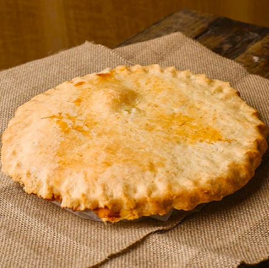
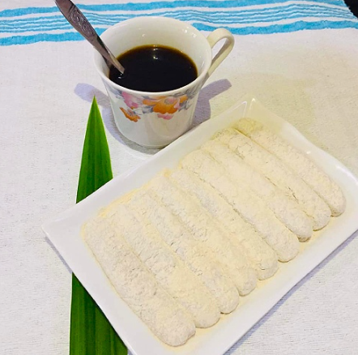
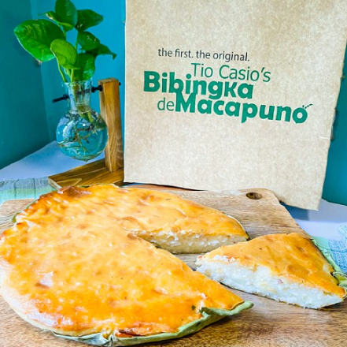
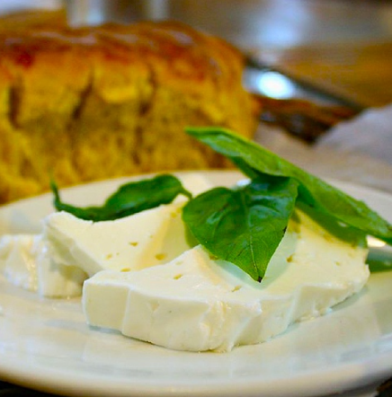
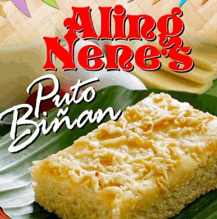
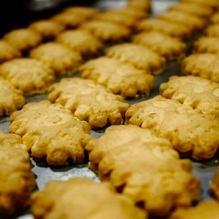
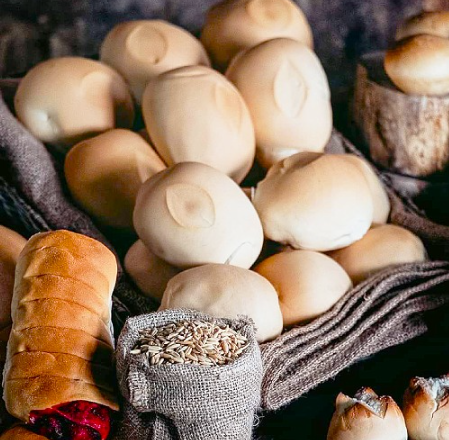
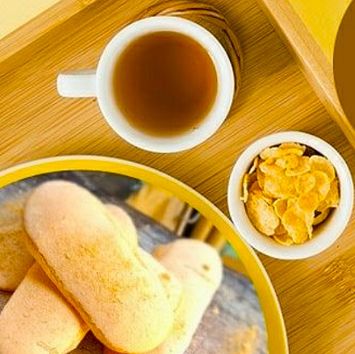

Top 10 best pasalubong from Laguna:
Foods that you can take home!
Looking for the best pasalubong from Laguna? You are in the right place! In this article, I will give you some of the best-tasting Laguna delicacies you can take home after visiting the province!
Laguna is home to many cheap and relaxing pools and resorts, and the largest lake in the Philippines, the Laguna de Bay (Lagoon of the town of Bay). But Laguna is also popular for its tasty and unique delicacies! If these are not enough reasons for you to visit Laguna, check out these tasteful delights you can bring home after a colorful day spent in the province of Laguna.
#1 Buko Pie
The debate on which is the best buko pie in town has been going on around in Laguna for some time. From a local’s point of view, Lety’s Buko pie is creamy and sweet. The flaky crust perfectly blends with the sweet filling. Moreover, the flakiness of the crust s till holds even after refrigerating.
Meanwhile, if you visit The Originals Buko Pie store, you will notice the long queue. And seeing this, you will be convinced that this is the best buko pie in town. The renowned Colette’s buko pie, on one hand, has a doughy white crust and has a sweet filling. But, it is noticeable that it is less (coconut) meaty, and the sweetness of the custard overpowers the other buko pie layers. Although if you have a sweet tooth, this probably would be your best choice.
Popular stores/Origin Town: Sta.Rosa, San Pablo, Calamba, Los Baños, Laguna
Price: Php 200-260 per box
#2 Espasol
Espasol is very popular in Laguna and is said to have originated from here. It is traditionally sold during the Christmas season, but this tastes good in every afternoon “merienda” too.
Popular stores/Origin Town:Liliw, Nagcarlan, Los Baños, Laguna
Price:3 packs for Php 100
#3 Bibinka Macapuno
It is a ricecake made with macapuno filling (very soft coconut meat) that will satisfy your cravings.
Popular stores/Origin Town:Tio Casios Bibingka de Macapuno,Sta.Cruz, Liliw, Laguna
Price:Php 200
#4 Kesong Puti
The key difference between the kesong puti and regular cheese is that kesong puti is white, unaged, and has a salty texture. You can make your own kesong puti if you have carabao milk at home. However, the kesong puti in Laguna is unique because carabao milk used here is fresh from the cattle. In fact, the Home of Kesong Puti or Sta. Cruz, Laguna holds an annual festival due to this delicacys historical relevance to the town.
Popular stores/Origin Town:Sta. Cruz, Lagun
Price:Php 150 per bundle
#5 Puto Biñan
Puto is a steamed, ground mixture of regular rice, glutinous rice, and young coconut. What makes the recipe of Puto Biñan special is that it is topped with melted butter, condensed milk, grated cheese, and salted egg. You can never go wrong with those yummy combinations!
Popular stores/Origin Town:Nila’s Puto Biñan, Aling Nene’s Puto Biñan, Biñan, Laguna
Price:Php 80 to Php 100
#6 Uraro
Uraro, araro, or arrowroot cookie. It is made from the flour of the Maranta arrowroot plant. The arrowroot cookie originated from southern Luzon namely, Laguna, Quezon and Marinduque. Its production is somehow tedious because the process starts from flour making until cookies are made. The makers don’t just use any other flour, since the arrowroot flour is what makes it unique from other cookies.
Popular stores/Origin Town:Gonzales Original Uraro, Orencio’s Uraro and Food Products/Liliw, Nagcarlan, Laguna
Price:Php 40-120 (with varying size packs)
#7 Monay Bae
Next to pandesal, monay is also lined up as one of Filipino’s pastry favorites. The difference between the Monay Bae (pronounced as “Ba-eh”) and regular monay is that the first bite from Monay Bae makes you crave for more. It has a sweet and creamy note on top of the soft texture of this unique bread.
Popular stores/Origin TownTenorio’s Bakery/Bay, Laguna
Price:Php 5 to Php 10
#8 Broas
The broas biscuit may not have originated from Laguna, but its makers in the province have perfected this pastry as a pasalubong favorite. Also called lady finger,broas is popularly known in other provinces like Quezon, Batangas and Bohol, where it originated. You can never go wrong with this simple, yet tasty broas biscuit.
Popular stores/Origin Town:rca’s Since 1949 Manufacturing/Luisiana, Laguna
Price:Php 230 to Php 350
Back to top